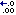
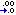

to add a column(s), click on the
 button.
An instruction is posted, to click on the element to be tabulated.
The element can be chosen from the model diagram or from the model
explorer.
button.
An instruction is posted, to click on the element to be tabulated.
The element can be chosen from the model diagram or from the model
explorer.
The data table helper is a tool for tabulating the results of a simulation run. You can use it if you want to inspect the simulation results in more detail than you can on a graph, or if you want to export the results, as a data file in comma-separated value (CSV) format, to data presentation or analysis software, e.g. Microsoft Excel.
You can specify as many model variables as you want. Any of the variables can be nested in multiple-instance submodels to any depth, in which case each instance of the submodel will be allocated one column. Columns can be removed, if desired, after the simulation has completed. The precision (number of decimal places) to which the numbers are displayed can be increased or decreased before each run of the simulation.
Note that for very large arrays of values this tool can run quite slowly, because it is oriented towards interactive display. It can be improved by turning off updating at every display time (this option is available in the properties dialogue). If you want to save very large data sets, or time series from long runs, it may be quicker to use the snapshot tool.
To remove all the tabulated data, click on the button. This preserves the column headings, but removes all the rows of data.
The layout of the table is controlled using the Table properties dialogue box. This allows the user to designate which dimensions of the data to use as row and column headings. For example, time can be used as either a row or column heading, and element names and element indices can be used similarly. It is also possible to exclude time from the table, tabulating current values only.
The elements to be tabulated are selected as column headings. The procedure for choosing column headings is as follows:
to add a column(s), click on the
 button.
An instruction is posted, to click on the element to be tabulated.
The element can be chosen from the model diagram or from the model
explorer.
button.
An instruction is posted, to click on the element to be tabulated.
The element can be chosen from the model diagram or from the model
explorer.
to remove a column(s), click on the button. An instruction is posted, to click on the column headings to be removed. The first click indicates the start of the range of columns to be removed, the second click indicates the end of the range. If the same column is selected twice, only that column is removed.
By default, all variables are tabulated with four decimal places of precision. This can be increased or decreased as desired, but only before each run of the simulation. The procedure for changing precision is as follows:
to increase the precision to which the
numbers are displayed, click on the

to decrease the precision to which the
numbers are displayed, click on the

Standard scientific notation is used automatically where appropriate. This uses the same number of significant figure as the decimal display.
In: Contents >> Running models >> Working with helpers